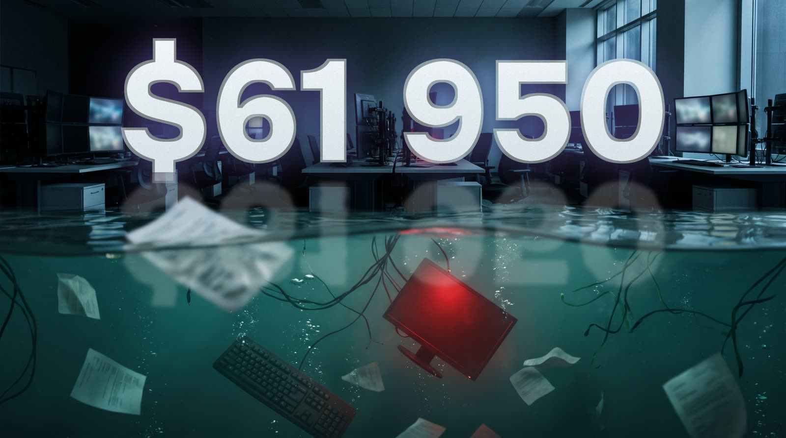
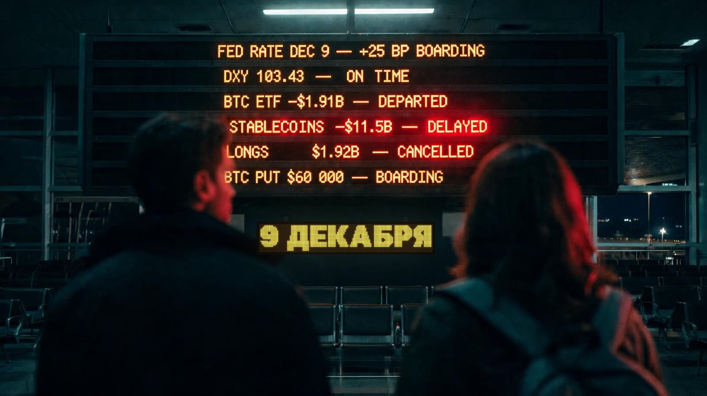
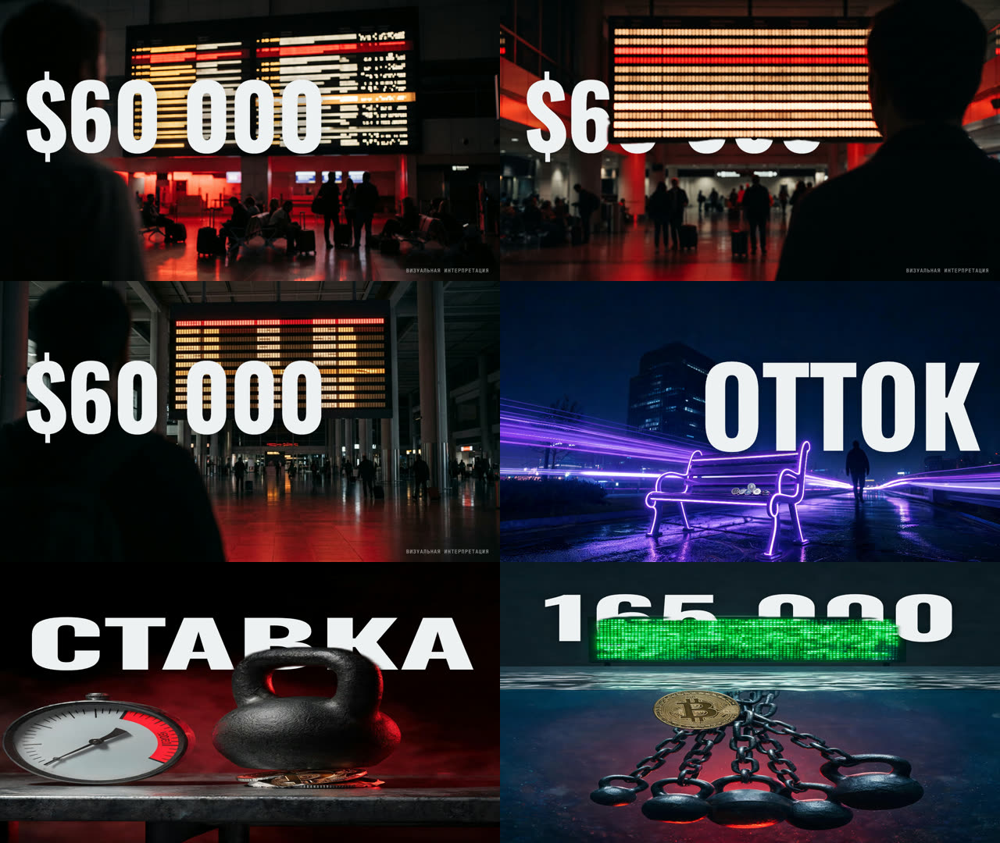

Текст на картинках — v2
Те же 3 картинки, новая типографика CRYPTUS: заголовок всегда целиком, объект закрывает только край, текст вживлён в свет сцены, на табло — шрифт табло. Сцены не перегенерировали.
Стало
«5 ГИРЬ» — был «призрак» за монетой → теперь целиком, со свечением, монета касается только края букв.

«$61 950» — вода съедала вторую половину → теперь цифры целиком над водой, в воде только отражение.

«9 ДЕКАБРЯ» — был белый шрифт-наклейка внизу → теперь светящаяся строка табло.
Было (как получил Андрей)

Битые цифры «$6▯▯▯», «165 ▯▯▯», плоский текст, три одинаковых «$60 000».